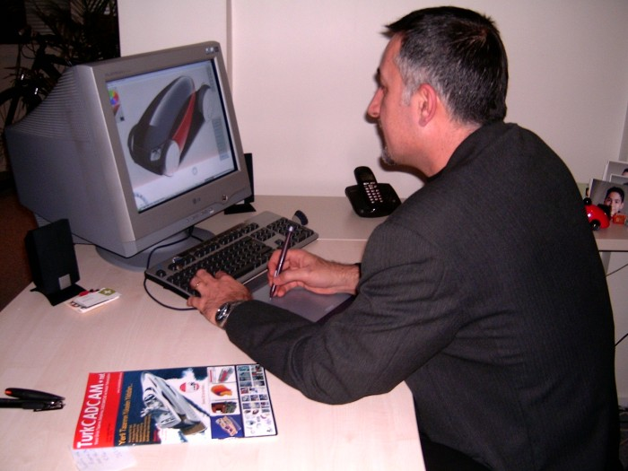
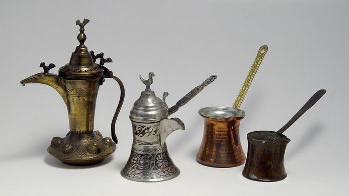
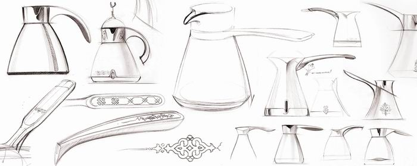

|
Yeni ürün geliþtirmek isteyen firmalar kendi tasarým ekibini kurabilecekleri gibi dýþarýdan da hizmet alabilirler; Seçim, hangi kriterlere göre yapýlmalý? Dýþarýdan tasarým hizmeti almayý düþünenlere tavsiyeleriniz nelerdir?
Ümit Altun: Aslýnda ikisinin de yeri farklý. Dolayýsýyla yeni ürün ihtiyacý olmadan önce "Burada mý yapsam, dýþarýdan mý servis alsam?" kararýný vermiþ olmak lazým. Þöyle ki; Firmada hiçbir tasarým aktivitesi yok ise, sadece üretim varsa ve hemen yeni bir ürün tasarýmý yapmasý gerekiyorsa tabii ki dýþarýda bu konuda tecrübeli bir tasarýmcýya veya tasarým bürosuna bu iþi yaptýrmasý daha mantýklýdýr. Çünkü kendi tasarým ekibini ve sistemini kurmasý, yeni alýnacak tasarýmcýlarýn firmaya uyum saðlamasý ve kaynaþmasý zaman alacaktýr. Þayet uzun vadede tasarým iþi firmada yapýlacaksa kendi tasarým ekibini kurmasý, bilgi birikimini de içeride tutmasý açýsýndan daha uygun olacaktýr. Ancak, bazý üretici firmalar, kendi tasarým ofisleri yýllardýr var olmasýna raðmen, arada bir yeni fikirlere ve taze kana ihtiyaç duyduðunda fikir almak adýna, -en azýndan yeni konseptler oluþturmak adýna- dýþarýdaki tasarým bürolarýyla birlikte çalýþmalar yapabiliyor.
Aslýnda, hem biz tasarýmcýlarýn, hem de üretici firmalarýn bu tip çalýþmalarý yapmaya ihtiyacý var; Sadece yeni bir ürün üretmek deðil, gerçekten yenilikleri olan ve birtakým ihtiyaçlara cevap veren, insanlarýn "iþte benim aradýðým ürün" diyebileceði nitelikte ürünleri üretmeye ihtiyaç var. Çünkü günümüzde benzer niteliklerde ürünler üreten yüzlerce firma var. Ýþ sadece benzer nitelikte ürünler arasýndan seçim yapmaya kaldýðý zaman, fiyat aðýrlýklý bir seçim söz konusu oluyor. Ancak, onlar içinde bir tanesi kullaným özellikleri veya bambaþka özellikleri açýsýndan tüketicinin ihtiyacý olan bir þeyi yakalayýp o farklýlaþmayý saðlayabilmiþse fiyat ikinci plana atýlabiliyor. Ve bu, yüzlerce benzer ürün üreten firmalar arasýnda çok farklý bir avantaj saðlýyor.

Firmanýzda tasarýmýn süreci nasýl iþliyor?
Ümit Altun: Tasarým süreci bizde aslýnda baþlangýç ve bitiþ olarak birbirlerine çok benzemesine raðmen, müþterilerimizin ihtiyacýna göre de farklýlaþabiliyor. Þöyle ki, normal prosedür gereði ilk baþta bir tasarým talebi bize iletiliyor ve o tasarým talebinden biz tasarýmýn ne tür bir ihtiyaca cevap vereceðini çýkartmaya çalýþýyoruz ve bunun sonunda bir karþý teklif hazýrlýyoruz. Aslýnda bu karþý teklif içeriðinde firmaya, projeyle ilgili olarak ne anladýðýmýzý açýklýyoruz. Teklif onaylandýktan ve tasarým baþladýktan sonra istenenin sadece görünüþ tasarýmý mý, yoksa yenilikçi bir tasarým mý olduðu netleþmiþ oluyor. Biz de bu aþamadan sonra tasarým çalýþmasýna baþlýyoruz.
Öncelikle tasarlanacak ürün ile ilgili bir araþtýrma çalýþmasý yapýyoruz. Bu çalýþma kapsamýnda, üretilmiþ olan benzer ürünlere ulaþmaya çalýþýyoruz. Genel bir bilgi edindikten sonra kullanýcýlarýn görüþlerini topluyor ve bu tip ürünleri kullanýrlarken gözlemler yapýyoruz. Burada amaç, kullaným esnasýnda yaþanan problemleri görerek tespit etmek ve yapacaðýmýz tasarýmda bu konulara dikkat etmektir.
Tüm araþtýrma, inceleme ve gözlem çalýþmalarýndan sonra derlediðimiz bütün bilgiler ile tasarýmý yapacaðýmýz ürüne odaklanýyoruz. Yeni fikirler üretmek üzere kimi zaman bizler, kimi zaman tasarým yaptýðýmýz firma elemanlarý ile birlikte beyin fýrtýnasý çalýþmalarý yapýyoruz. Sonrasýnda çýkan fikirleri görselleþtirip, oyluyoruz ve ana konseptleri oluþturuyoruz. Ana konseptler netleþtikten sonra, Görünüþ çalýþmasýnýn ilk aþamasý olan eskiz çalýþmalarý yapýyoruz ve bu konseptleri teker teker tasarlýyoruz. Tasarýmlarý yapýlmýþ olan bu konseptler arasýndan seçilen bir alternatifin 1/1 görünüþ modeli genellikle bu aþamadan hemen sonra yapýlýyor. Görünüþ modeli üzerinde gerekli deðerlendirme ve çalýþmalar yapýldýktan sonra ve görünüþ tasarýmý bu aþamada dondurulduktan sonra firma tarafýndan istendiði taktirde, mekanik tasarým ve parça tasarýmlarý yapýlýyor.
En son aþamada, parça tasarýmlarý bitirildikten sonra hýzlý prototip yöntemlerini kullanarak çalýþýr prototip yapýlýyor ve CAD datalarý kalýp üretimini yapacak olan firmaya iletiliyor.
Endüstriyel tasarým konusunda kariyer yapmak isteyen gençlere tavsiyeleriniz nelerdir?
Ümit Altun: Baþarýlý bir tasarýmcý olabilmek için. Tasarýmý sadece bir meslek olarak deðil, ayný zamanda bir yaþam biçimi olarak görmeleri gerekmektedir. Bu da tasarýmla yatýp tasarýmla kalmak, kimi zaman rüyalarýnýzda bile tasarýmýný yaptýðýnýz ürünlerle uðraþmak durumunda olmaktýr. Dolayýsýyla çok sevmeden yapýlacak bir meslek deðildir.
Genç tasarýmcýlar okullarýndan mezun olduktan sonra özellikle üretim yöntemleri, malzeme gibi konularda kendilerini yetiþtirmelidirler. Çünkü yaptýðýnýz tasarýmýn sizin önerdiðiniz þekilde üretilebilmesi için bu konularý çok iyi bilmeniz ve tasarýmlarýnýzý üretilebilir nitelikte oluþturmanýz gerekmektedir.
Her ne kadar teknik konularý bilmek ve tasarým yaparken bunlarý göz önünde bulundurmak gerekiyorsa da, tasarýmýn konsept aþamasý ile detaylandýrma aþamalarýnda iki farklý düþünce sistemine göre davranmamýz gerekmektedir. Konsept tasarýmý aþamasýnda aðýrlýklý olarak kullanýcý ve market beklentileri dikkate alýnmalýdýr. Daha sonraki üretime geçiþ aþamalarýnda ise konsept tasarýmýnda belirlediðimiz doðrularý deðiþtirmeden tasarýmýn aslýna sadýk kalarak üretime adapte etmek esas hedefimiz olmalýdýr.
Örnek ürün geliþtirme çalýþmasý:
Türk Kahvesi için Elektrikli Cezve
Kullanýlan Programlar
- Ürünün 2 boyutlu skeç çizimlerinde Sketchbook ve Photoshop
- 3 Boyutlu tüm çalýþmalar, Skeç model, renderingler için Alias
Tasarým: DesignUM / 2005
Ýlk deneme imalatý: Aralýk 2005
Seri imalat baþlangýcý: Þubat 2006
Üretici: Eksen A.Þ.
Marka: Felix
Proje Tanýmý, Araþtýrma / Gözlem
Eksen / Cezve projesi Tasarým çalýþmasý 2005 Nisan ayýnda almýþ olduðumuz detaylý proje tanýmý ile baþlamýþtýr. Felix markasý için tasarlanacak olan Elektrikli cezve ile ilgili, özellikle evlerde kullanýlmasý, 4 fincan kahve kapasiteli ve plastikten üretilmesi ana taleplerdi. Bunun yanýnda içeride kullanýlacak rezistans, anahtar ve konektör gibi teknik parçalar ile ilgili kýsýtlarý da aldýktan sonra Türk kahvesi cezvesi ile ilgili bu güne kadar üretilmiþ klasik ve yeni cezve örneklerini araþtýrmaya baþladýk.
Ýyi bir Türk Kahvesi cezvesinin nasýl olacaðý ile ilgili kahve ustalarý ile sohbetler yaptýk. Kahve yaparken gözlemledik. Tüm bu araþtýrma, gözlem ve sohbetler sonucunda geleneksel kahve cezvesi ile ilgili bazý saptamalarda bulunduk. Geleneksel cezve formunun aslýnda tamamen fonksiyonlardan dolayý bugünkü þeklini almýþ olduðu netleþmiþ oldu.
Kahve cezvelerinde tabanýn geniþ olmasý eskiden mangalda köz üzerinde kahve yaparken daha dengeli durmasý için, boðaz kýsmýnýn dar olmasýnýn bol köpük için, boðaz kýsmýndan sonraki geniþ bölümün kahvenin taþmasýný kontrol edebilmek için, gaga formunun kahvenin fincana akýþý esnasýnda hem kontrollü dökülmesine, hem de köpüðü öldürmeden dökülmesine olanak saðlayacak þekilde formlandýðýný tespit ettik.

Eskiz ve Görünüþ çalýþmalarý
Araþtýrma ve gözlemlerden elde ettiðimiz bilgiler ve tespitler ýþýðýnda cezveye ait geleneksel formu çok fazla deðiþtirmeden, ancak bugüne ait detaylar ve malzemeler ve üretim yöntemleri ile bir cezve tasarýmý yapýlmasýna karar verdik. Bu aþamadan sonra çok sayýda eskiz çalýþmasý yaptýk. Eskiz çalýþmalarýnda cezve üzerinde olmasý gereken uyarý ýþýðýnýn formunda bir Türk motifinin soyutlanarak kullanýlmasý fikrini benimsedik.
Eskiz çalýþmalarýnýn ardýndan yapýlan deðerlendirme toplantýlarýnda 5 ana görünüþ ve türevlerinden oluþan eskizler 3 boyutlu CAD modelleri bilgisayar ortamýnda yapýlmak üzere seçildi. Belirlenen 5 farklý tasarýmý 3 boyutlu olarak bilgisayar ortamýnda modelledik ve mümkün olduðunca gerçeðe yakýn olarak görselleþtirdik. Daha sonra yapýlan deðerlendirme ve seçim toplantýlarýnda yanda görünen alternatifin yapýlmasýna karar verildi.

|